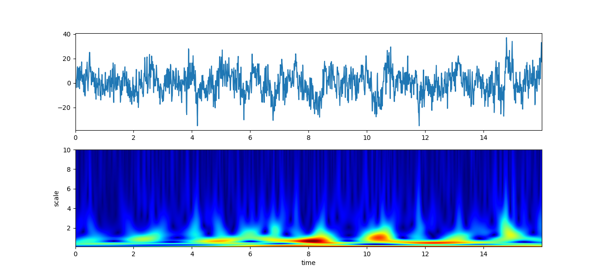
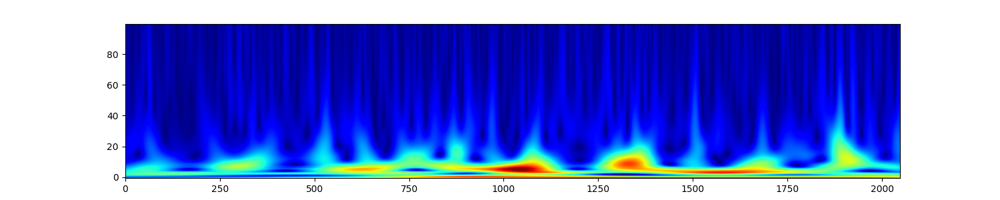
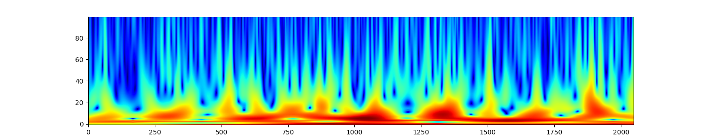
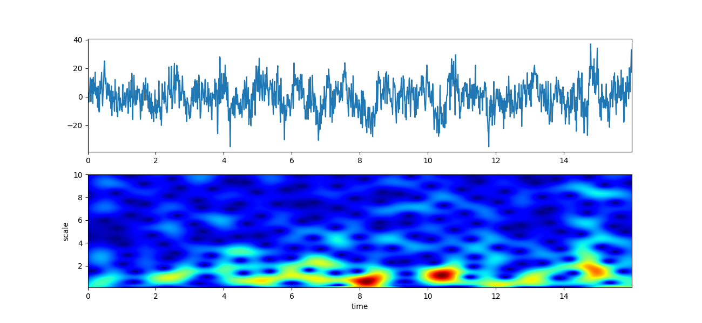
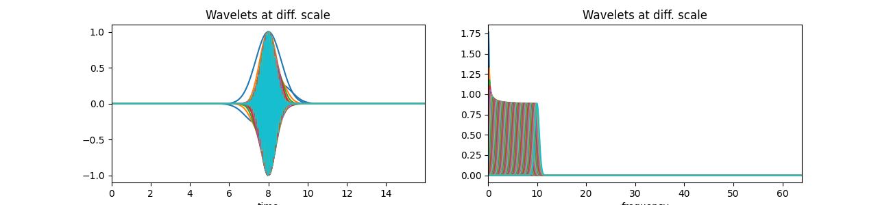
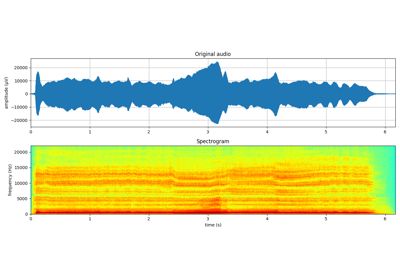
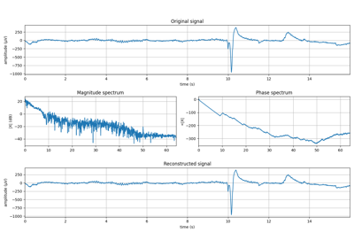

Note
Go to the end to download the full example code or to run this example in your browser via JupyterLite or Binder
Scalogram CWT¶
# Import
import numpy as np
import matplotlib.pyplot as plt
import spkit
print('spkit-version ', spkit.__version__)
import spkit as sp
from spkit.cwt import ScalogramCWT
from spkit.cwt import compare_cwt_example
# Data
x,fs = sp.load_data.eegSample_1ch()
t = np.arange(len(x))/fs
print('shape ',x.shape, t.shape)
plt.figure(figsize=(15,3))
plt.plot(t,x)
plt.xlabel('time')
plt.ylabel('amplitude')
plt.show()
spkit-version 0.0.9.7
/Users/nikeshbajaj/Library/CloudStorage/OneDrive-QueenMary,UniversityofLondon/Github/GIT3/Dev/SPKIT_Dev/SPKIT_DOC_7/examples/signal_processing/plot_sp_scalogram_cwt_example.py:22: DeprecationWarning: function eegSample_1ch will be deprecated in future version, due to naming convension, please use 'eeg_sample_1ch' for updated/improved functionality [spkit-0.0.9.7].
shape (2048,) (2048,)
Comparison Example¶
# Predefined example script
compare_cwt_example(x,t,fs=fs)

Gauss wavelet¶
# Default parameter setting
XW,S = ScalogramCWT(x,t,fs=fs,wType='Gauss',PlotPSD=True)
print(XW.shape, S.shape)
plt.figure(figsize=(15,3))
plt.imshow(np.abs(XW),aspect='auto',origin='lower',cmap='jet',interpolation='sinc')
plt.show()
plt.figure(figsize=(15,3))
plt.imshow(np.log10(np.abs(XW)+0.2),aspect='auto',origin='lower',cmap='jet',interpolation='sinc')
plt.show()
# ### with custom setting
f0 = np.linspace(0.1,10,100)
Q = np.linspace(0.1,5,100)
XW,S = ScalogramCWT(x,t,fs=fs,wType='Gauss',PlotPSD=True,f0=f0,Q=Q)
# Show wavelets in time and frequency domain
f0 = np.linspace(0.1,10,100)
Q = np.linspace(0.1,5,100)
XW,S = ScalogramCWT(x,t,fs=fs,wType='Gauss',PlotPSD=True,PlotW=True,f0=f0,Q=Q)
- 
- 
- 
- 
- 

(100, 2048) (100,)
Morlet wavelet¶
print('Morlet wavelet')
XW,S = ScalogramCWT(x,t,fs=fs,wType='Morlet',PlotPSD=True,)
Morlet wavelet
Gabor wavelet¶
print('Gabor wavelet')
XW,S = ScalogramCWT(x,t,fs=fs,wType='Gabor',PlotPSD=True,)
Gabor wavelet
Poisson wavelet¶
print('Poisson wavelet')
XW,S = ScalogramCWT(x,t,fs=fs,wType='Poisson',PlotPSD=True,)
Poisson wavelet
Complex Maxican wavelet¶
print('Complex Maxican wavelet')
XW,S = ScalogramCWT(x,t,fs=fs,wType='cMaxican',PlotPSD=True,)
Complex Maxican wavelet
Complex Shannon wavelet¶
print('Complex Shannon wavelet')
XW,S = ScalogramCWT(x,t,fs=fs,wType='cShannon',PlotPSD=True,)
Complex Shannon wavelet
Total running time of the script: (0 minutes 2.810 seconds)
Related examples



Sinasodal Model: Analysis and Synthesis
Sinasodal Model: Analysis and Synthesis

Analysis and Synthesis Models